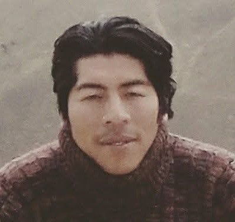
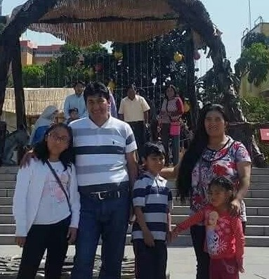

Mis Padrinos
Padrinos de Corte de Pelo

Hoy cae un mechon, mi tesoro infantil,
mis pelos más cortos, para jugar mejor,
Que cada corte sea un dulce recuerdo,
Padrino, Madrina, gracias por estar.
Padrinos de Bautizo

Son como ángeles, Padrino y Madrina,
que mi vida con amor ilumina.
Me dan su mano, me enseñan a rezar,
¡gracias por mi bautizo, y por siempre amar!